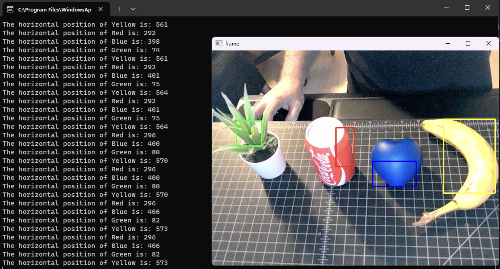
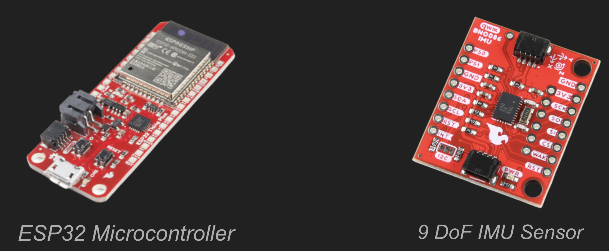

🎮 Railgun Rampage | Embedded System Multiplayer Game
A UCLA senior embedded systems project combining computer vision, speech recognition, gesture recognition, WebSocket networking, hardware controllers, and a Unity multiplayer game.
Overview
Railgun Rampage was my embedded systems senior project at UCLA. My team of three built a multiplayer arcade-style shooter game where up to four players used custom railgun controllers to aim, shoot, reload, and interact with a Unity game environment.
The system combined camera tracking, speech recognition, gesture recognition, and real-time multiplayer communication through WebSockets.

Project Requirements
- Multiplayer support (up to 4 players)
- Camera tracking using OpenCV
- Speech recognition input
- Gesture recognition using IMU
- Low-latency networking via WebSockets
- Unity GUI interface
System Architecture
The system used a host script to process all game logic and multiple player scripts communicating over WebSockets. Camera data was processed using OpenCV thresholding, while gesture and speech inputs were processed independently and fused into gameplay logic.

Hardware Controller and Tracking
I worked on the railgun controller integration, including hardware input processing, gesture recognition, and system interaction. The player's controllers were 3D printed railguns with addressable LEDs for camera tracking and immersion, IMU sensors for reloading gestures, an ESP32 for processing and data transmission, a PSU, and more.



Software & Input Processing
- OpenCV camera tracking
- Google Speech-to-Text API
- IMU gesture recognition
- WebSocket networking
- Unity game engine
Demo Videos
Technical Challenges
- Low-latency multiplayer synchronization
- Reliable gesture recognition
- Handling noisy camera input
- System integration across hardware + software
Results
- Fully functional multiplayer system
- Real-time gameplay with multiple input methods
- Successful demo to peers
What I Learned
This project taught me how to integrate hardware, software, networking, and user interaction into one system, and how small changes in system design impact performance and user experience.